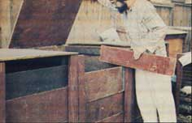

ABOVE TOP: The IUH greenhouse serves not only as a shelter and nursery for seedlings, but as a solar heater for the adjoining bedroom!, BOTTOM: Some 10 chickens and 10 to 20 rabbits (not shown) inhabit the cages on the house's shady north side. Kitchen garbage is given to the hens before going to the compost bin.